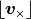

utils package¶
Submodules¶
utils.calibrator module¶
Created on Jul 12, 2017
Thermometry conversion class using demodRaw values from TRead messages. It emulates the Calibrator java class at gov.nasa.gsfc.aurora.common.piperthermometry
@author: bettii
utils.config module¶
Module that configures the matplotlib module.
It also contains some common variables that are useful for the scripts:
save_folderfolder where the txt and pickle files can be savedimg_folderfolder where the figures can be savedflightDisksFoldersList of Aurora archive folders (full path) where there is the SSDs information.flightTelemetryFoldersList of Aurora archive folders (full path) where there is the information from the telemetry (Rubble).”
utils.dataset module¶
Conatins useful functions to read and plot the fields archived by Aurora.
The DataSet class reads and creates a pandas.DataFrame object containing the desired fields.
@author: Marc Casalprim
-
class
utils.dataset.DataSet(folder=None, freq=400.0, min=None, max=None, folder_export=None, nValues=None, start=None, verbose=False, rpeaks=False, estimator=False, starcam=False, fieldsList=[], foldersList=[], droplist=[], timeIndex=False)¶ Class containing useful methods to read and generate a pandas dataframe containing the desired fields. Derived from Maxime’s original codes. The dataframe is stored as the attribute df.
-
readField(field, folder=None, rpeaks=True, verbose=False, nValues=None, start=None, timeIndex=False)¶ Reads a single field and updates the dataframe df accordingly.
Parameters: - field – a
Fieldobject to read - folder – folder where the fileds are located (if None, uses self.folder)
- rpeaks – remove peaks? (where all the values are zero)
- verbose – print progress?
- nValues – number of values to read
- start – where to start reading the files
- timeIndex – index by time? (derived from the folder name)
- field – a
-
readListFields(fieldsList, folder=None, rpeaks=True, verbose=False, nValues=None, start=None, timeIndex=False)¶ Reads a list of fields and stores the new fields in the df attribute
Parameters: - fieldsList – list of utils.field.Field objects
- folder – folder where the fields are located
- rpeaks – remove peaks? (where all the values are zero)
- verbose – print progress?
- nValues – number of values to read
- start – where to start reading the files
- timeIndex – index by time? (derived from the folder name)
-
readMultipleFolders(fieldsList, foldersList, rpeaks=False, verbose=False, timeIndex=True)¶ Stores in self.df a new
DataFrameobject containing thefieldsListinformation from all the folders infoldersList. The indexing of theDataFrameis aDatetimeIndexby default (timeIndex=True), using the date and time of the folder name.Parameters: - fieldsList – list of
Fieldobjects - foldersList – list of folders where the fields are located
- rpeaks – remove peaks? (where all the values are zero)
- verbose – print progress?
- timeIndex – index by time? (derived from the folder name)
- fieldsList – list of
-
-
utils.dataset.extractDuplicates(df, th=0.001)¶ Removes rows where there are duplicates of the quaternions at the first column of the dataframe df
Parameters: - df – a pd.DataFrame object
- th – tolerance of the difference in degrees between the RA coordinates of the duplicate quaternions (default 1e-3)
Returns: the df with the duplicates removed
Return type: pd.DataFrame
-
utils.dataset.extractGyrosAndStarcam(dataframe, labels_gyros=['gyroX', 'gyroY', 'gyroZ'], label_triggers='triggers', labels_scerrors=['ra_err', 'dec_err', 'roll_err'])¶ Returns three dataframes with the Groscopes, Starcamera and Estimator data respectively. Synchronizes the Starcamera with the triggers. Useful for the Estimator classes.
The dataframe must contain, at least, the following columns: [‘qI2G’, ‘qI2S’,’dec_sc’, ‘ra_sc’, ‘roll_sc’,’qi’, ‘qj’, ‘qk’, ‘qr’,’gyroX’, ‘gyroY’, ‘gyroZ’,’biasX’,’biasY’,’biasZ’,’P00’,’P01’,’P02’,’P10’,’P11’,’P12’,’P20’,’P21’,’P22’]
Parameters: - dataframe – a
DataFrameobject containing all the infromation to extract - labels_gyros – columns of the dataframe that contain the gyroscopes information
- label_triggers – column of the dataframe that contains the triggers information
- labels_scerrors – columns of the dataframe that contain the star camera uncertainties information
Returns: gyros,sc,est: dataframes with the gyroscopes, star camera and estimator data respectively.
Return type: (
pandas.DataFrame,pandas.DataFrame,pandas.DataFrame)- dataframe – a
-
utils.dataset.extractPs(dataframe)¶ Generates a 3x3 covariance matrix from the columns [‘P00’,’P01’,’P02’,’P10’,’P11’,’P12’,’P20’,’P21’,’P22’] of the
dataframeParameters: dataframe – a pandas.DataFrameobject with at least the 9 columns listedReturn type: 3x3 ndarray
-
utils.dataset.filterArray(x, N=200, R=0.9)¶ Smoothes peaks of the ndarray x.
Parameters: - x – ndarray to filter
- N – width of the peaks to remove
- R – overlapping ratio of the gliding window [0,1]
Returns: a filtered ndarray with the same dimensions as x
Return type: ndarray
-
utils.dataset.filterDataframe(df, N=3, R=0.9)¶ Removes peaks from the dataframe df. It uses filterArray(df[column].values, N, R)
Parameters: - df – a pd.DataFrame object
- N – width of the peaks to remove
- R – overlapping ratio of the gliding window [0,1]
Returns: the df filtered, of the same size
Return type: pd.DataFrame
-
utils.dataset.filterQuats(df, onlyQuats=True)¶ Filters peaks of the dataframe df with quaternions. It uses filterArray(df[column].values, N=3, R=0.9)
Parameters: - df – a pd.DataFrame object
- onlyQuats – filter only the columns with quaternions? (if False it has the same effect as filterDataframe(df))
Returns: the df filtered, of the same size
Return type: pd.DataFrame
-
utils.dataset.genQuaternions(dataframe, quats={'qI2S': ['ra_sc', 'dec_sc', 'roll_sc'], 'qest': ['qi', 'qj', 'qk', 'qr'], 'qI2G': ['qi_sc', 'qj_sc', 'qk_sc', 'qr_sc']}, norm=False, filter=False)¶ Generates a dictionary of lists of
Quatobjects using the columns of the dataframe defined by the quats dictionary values. The returned dictionary will have the same keys asquatsParameters: - dataframe –
pandas.DataFrameobject - quats – dictionary defining the columns to read that will be passed to the
Quatconstructor - norm – normalize quaternion?
- filter – filter the quaternions?
Returns: dictionary of
Quatlists, keyed by the keys ofquats.- dataframe –
-
utils.dataset.load_fields(fieldsList, folder=None, nValues=None, start=None)¶ Reads the fields in fieldsList that are in the folder
Parameters: - fieldsList – list of utisl.field.Field to read
- folder – folder where the fields will be read
- nValues – number of values we want to read (if None, all of them)
- start – value from where we start counting nValues (if None, starting from the end of file)
Returns: dictionary of
numpy.ndarrayobjects keyed by the field’s labelReturn type: dict
-
utils.dataset.load_single_field(filename, datatype, nValues=None, start=None)¶ Reads a binary file. It uses the
numpy.fromfilefunction.Parameters: - filename – complete filename of the field to read
- datatype – data type of the binary file (eg. int32 -> ‘i4’)
- nValues – number of values we want to read (if None, all of them)
- start – value from where we start counting nValues (if None, starting from the end of file)
Returns: values of the field
Return type: ndarray
-
utils.dataset.plotColumns(df, units='', xlabel='Index', ylabels=None, ncols=1)¶ Plot all the columns of the
DataFrameobjectdfin a subplots layout withncolscolumnsParameters: - df – a
DataFrameobject - units – string to add at the end of the ylabels
- xlabel – label of the x axis
- ylabels – labels of the y axis (if None, ylabels=df.columns)
- ncols – number of columns of the subplots layout
Return type: matplotlib.figure.Figure- df – a
-
utils.dataset.plotCovs(df, time_label='Palestine Time', ylabels=None, labels=None, styles=['b', 'r', 'g', 'k'], legend=False, xlim=None, function=<function <lambda>>, rotate=False)¶ Plot the first three diagonal elements of the matrices in the dataframe df in a 3x1 subplots layout (P11,P22,P33)
Parameters: - df – a pd.Dataframe containing exclusively columns of np.matrix objects greater than 3x3
- time_label – label of the x axis
- ylabels – y axis labels of the three subplots, in order top-bottom
- labels – legend labels of every column (if None, use df.columns as labels)
- styles – plot styles or kwargs of every column
- legend – show legend?
- xlim – limits of the x axis [xmin,xmax]
- function – function to be passed at every diagonal element
- rotate – rotate the covariance matrix -46 degrees? (represent in SC reference frame)
Return type: matplotlib.figure.Figure
-
utils.dataset.plotInnovations(ests, sc, time_label='Palestine Time', units='arcsec', conv=<function <lambda>>, labels=None, styles=['b', 'r', 'g', 'k'], legend=False, xlim=None, sync=False, rotation=True)¶ Plot the errors between the estimated attitudes in the list of dataframes ests and the star camera solutions in the dataframe sc
Parameters: - ests – list of pd.Dataframe containing a qest column
- sc – pd.Dataframe containing the star camera information (qI2G column)
- time_label – label of the x axis
- units – string describing the units of the values
- conv – function to be passed at every error
- labels – legend labels of every pd.Dataframe in ests (if None, the labels are the position in the ests list)
- styles – plot styles or kwargs of every pd.Dataframe in ests
- legend – show legend?
- xlim – limits of the x axis [xmin,xmax]
- sync – plot synchronized with time?
- rotation – compute the errors in the SC reference frame?
Return type: matplotlib.figure.Figure
-
utils.dataset.plotQuaternions(df, time_label='Palestine Time', labels=None, styles=['b', 'r', 'g', 'k'], legend=False, xlim=None)¶ Plot the quaternions of the pd.Dataframe df in a 3x1 subplots layout (RA,DEC,ROLL)
Parameters: - df – a pd.Dataframe containing exclusively utils.quat.Quat objects
- time_label – label of the x axis
- labels – legend labels of every column (if None, use df.columns as labels)
- styles – plot styles or kwargs of every column
- legend – show legend?
- xlim – limits of the x axis [xmin,xmax]
Return type: matplotlib.figure.Figure
-
utils.dataset.toTimeIndex(dataframe, folder, freq=400.0)¶ Returns the same dataframe but with the indices in DateTime format. The input
dataframemust have mceFrameNumber indices. The time in the folder is considered as the starting time for the first mce frame number.Parameters: - dataframe – a
DataFrameobject - folder – folder name
- freq – frequency of the index (default 400 Hz)
Returns: a dataframe with
DateTimeindices- dataframe – a
utils.detector module¶
Created on Jun 5, 2017
Useful functions to handle the FIR detectors information.
@author: Marc Casalprim
-
utils.detector.createDataAxes(title='', dets=[0, 1, 2, 3])¶
-
utils.detector.createImagesAxes(title='')¶
-
utils.detector.data2matrices(data, index=None, center=True, dead=[])¶ Converts the fields in data to 4 3D matrices representing the detector images evolution in time
-
utils.detector.dataframe2matrices(dataframe)¶ Converts the fields in dataframe to 4 3D matrices representing the detector images evolution in time
-
utils.detector.generateDictMap()¶ Associates every field to a detector pixel and generates a dictionary
dictMapof the mapping, keyed by the field name. Each entry of the dictionary has 3-tuple describing the (row,column,detectorId)
-
utils.detector.getDeadPixels(filename='dead_pixels.txt')¶
-
utils.detector.getFFTs(matrix, sindex=0, eindex=None)¶ Returns the first half of the FFT of the matrices inside the dictionary
matrix. It assumes the time is in the 3rd dimension. :rtype: dict
-
utils.detector.getIndexRangeLastStroke(CDLposTarget, CDLmceFN, masterMceFn)¶
-
utils.detector.plotData(data, axes, downsample=4)¶
-
utils.detector.plotImages(data, axes, sum=None, cmap='viridis')¶
utils.estimator module¶
Created on Jul 24, 2017
Defines two functions that are useful when dealing with the estimators. readAndSave reads the infromation and stores it in pickle files. openPickle opens the saved pickles. In this way we read and generate all the useful dataframes just once, saving time.
@author: Marc Casalprim
-
utils.estimator.openPickles(folder, openEst=True)¶ Reads the information relevant to the estimator and creates different dataframes. It uses
extractGyrosAndStarcam(). The generated dataframes are stored in pickle files.columns of gyros: [‘gyroX’, ‘gyroY’, ‘gyroZ’] columns of sc: [‘qI2G’,’qI2S’,’triggers’] columns of est: [‘qest’,’biasX’,’biasY’,’biasZ’,’P’]
Parameters: - folder – folder where the files are located
- openEst – open estimator dataframe? (if False, saves time and est will be a empty dataframe)
Returns: gyros,sc,est
Return type: (pandas.Dataframe,pandas.Dataframe,pandas.Dataframe)
-
utils.estimator.readAndSave(folder, initial_time=1000, final_time=None)¶ Reads the information relevant to the estimator and creates different dataframes. It uses
extractGyrosAndStarcam(). The generated dataframes are stored in pickle files.columns of gyros: [‘gyroX’, ‘gyroY’, ‘gyroZ’] columns of sc: [‘qI2G’,’qI2S’,’triggers’] columns of est: [‘qest’,’biasX’,’biasY’,’biasZ’,’P’]
Parameters: - folder – folder where the fields are located and the files will be stored
- initial_time – mce frame number where we start
- final_time – mce frame number where we end (if None, until the end of the files)
Returns: gyros,sc,est
Return type: (pandas.Dataframe,pandas.Dataframe,pandas.Dataframe)
utils.field module¶
Created on 01 may 2017
Functions and methods useful to read the fields in an Aurora archive.
@author: Marc Casalprim
-
class
utils.field.Field(fieldName, dtype='f8', indexName=None, indexType='i8', label=None, conversion=1, function=<function <lambda>>, range=10000000000.0)¶ Bases:
objectClass describing a field located in an Aurora archive.
Parameters: - fieldName – name of the field, the whole file name
- dtype – string describing the datatype of the field (ie. ‘f8’ is a 64 bit float)
- indexName – file name of the time index associated with this field. If None, is fieldName.rsplit(‘.’, 1)[0] + ‘.mceFrameNumber’
- indexType – string describing the datatype of the index field (ie. ‘i8’ is a 64 bit int)
- label – short name for the field. In
utils.dataset.Datasetit is used as the name for the dataframe columns. (if None, last word of the fieldName) - conversion – multiplying factor of the data, useful to convert units
- function – function that will be applied to to the field data
- range – valid range of the field, any value outside +-range will be discarted. Useful to remove parsing errors.
-
utils.field.getDtypes(folder)¶ Return the dtypes of all fieldNames using the format file in folder
-
utils.field.getFieldsContaining(substring, folder, indexName=None, dtype='f8')¶ Return a list of fields in the folder containing substring
-
utils.field.getFieldsRegex(regex, folder)¶ Return a list of fields in the folder matching the regular expression regex
-
utils.field.getFormat(fieldName, folder)¶ Return the dtype of the fieldName using the format file in folder
utils.quat module¶
- Quaternion provides a class for manipulating quaternion objects. This class provides:
- a convenient constructor to convert to/from Euler Angles (RA,Dec,Roll)
- to/from quaternions
- class methods to multiply and divide quaternions
-
utils.quat.DCM2FordAngles(matrix, rollArnab=0, prVersions=False)¶
-
class
utils.quat.Quat(attitude)¶ Bases:
objectQuaternion class
Example usage:
>>> from Quaternion import Quat >>> quat = Quat((12,45,45)) >>> quat.ra, quat.dec, quat.roll (12, 45, 45) >>> quat.q array([ 0.38857298, -0.3146602 , 0.23486498, 0.8335697 ]) >>> q2 = Quat([ 0.38857298, -0.3146602 , 0.23486498, 0.8335697]) >>> q2.ra 11.999999315925008
Multiplication and division operators are overloaded for the class to perform appropriate quaternion multiplication and division.
Example usage:
>>> q1 = Quat((20,30,40)) >>> q2 = Quat((30,40,50)) >>> q = q1 / q2
Performs the operation as q1 * inverse q2
Example usage:
>>> q1 = Quat((20,30,40)) >>> q2 = Quat((30,40,50)) >>> q = q1 * q2
Parameters: attitude – initialization attitude for quat attitudemay be:- another Quat
- a 4 element array (expects x,y,z,w quat form)
- a 3 element array (expects ra,dec,roll in degrees)
- a 3x3 transform/rotation matrix
-
dec¶ Retrieve Dec term from equatorial system in degrees
-
equatorial¶ Retrieve [RA, Dec, Roll] :rtype: numpy array
-
q¶ Retrieve 4-vector of quaternion elements in [x, y, z, w] form
Return type: numpy array
-
ra¶ Retrieve RA term from equatorial system in degrees
-
roll¶ Retrieve Roll term from equatorial system in degrees
-
transform¶ Retrieve the value of the 3x3 rotation/transform matrix :returns: 3x3 rotation/transform matrix :rtype: numpy array
-
utils.quat.cost(x, q, order)¶
-
utils.quat.getAngles(q, order='YPR')¶ Returns the three angles (Yaw,-Pitch,Roll) that describe the quaternion
qapplied in the defined multiplication orderExample usage:
>>> q = Quat((20,30,40)) >>> angles=getAngles(q,order='YPR') >>> print angles [ 34.72446346 8.05229897 47.93141757] >>> Y=Quat((angles[0],0,0)) >>> P=Quat((0,angles[1],0)) >>> R=Quat((0,0,angles[2])) >>> Y*P*R [ 20.0000036 30.00002361 40.00001084]
Parameters: - q – a utils.quat.Quat object
- order – desired multiplication order (ie. ‘RPY’ is R*P*Y)
Returns: 3-dimensional np.array, [Yaw,-Pitch,Roll] angles in degrees
-
utils.quat.normalize(array)¶ Normalize a 4 element array/list/numpy.array for use as a quaternion
Parameters: quat_array – 4 element list/array Returns: normalized array Return type: numpy array
-
utils.quat.vec2skew(v)¶ Return the skew-symmetric matrix  related to the vector
v
Parameters: v – a 3-dimensional vector Returns: a skew-symmetric matrix Return type: 3x3 np.matrix
utils.thermometers module¶
Created on :’Jul 10, 2017
@author: Marc Casalprim
-
utils.thermometers.getTemperaturesFromRawDataFrame(rawdf)¶ Returns a new dataframe with the calculated temperatures. Raw DataFrame format: all columns from Standard message start with “std_”
-
utils.thermometers.unwrapCounter(counter)¶ Returns the evolution of the counter but unwrapping modulo 255
Module contents¶
This package contains functions and Classes that are useful to process and plot the data from the Aurora archives.